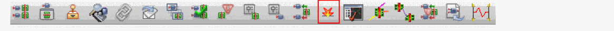
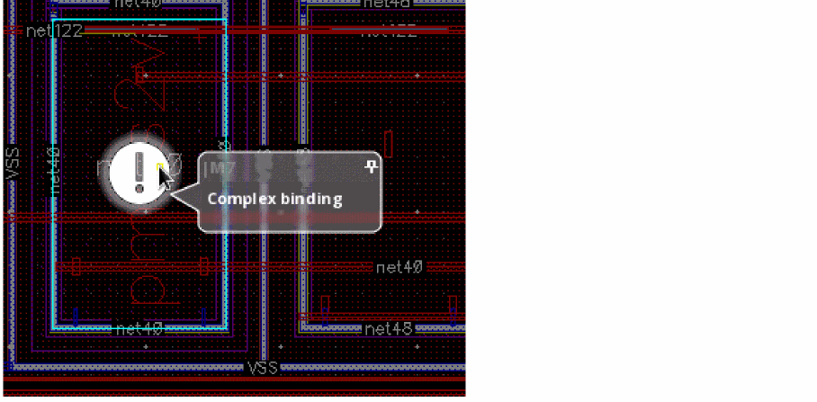

8
Checking Design Data
This chapter explains how to use the Virtuoso® Layout Suite layout editor (Layout XL) to check your design as you work.
This chapter discusses the following topics.
- Probing
- Tracing Nets
- Checking Shorts, Incomplete Nets, and Illegal Overlaps
- Checking Against Source
- Checking XL Compliance
- Checking Manufacturability
- Batch Checking
Probing
Probing lets you select an instance, net, or pin in the layout or schematic window to highlight the corresponding element in the other window. This helps you interactively explore the design and check that the selected instance, net, or pin has a corresponding counterpart in the schematic window and where it is placed in the canvas.
- Use the options in the right mouse button menu to specify how nets, instances, and terminals are probed and which layer and colors are used to draw the probes. Also use the right mouse button to remove existing probes.
- Use the options in the XL Probe form to filter the objects that can be selected by clicking in a window and to locate a specific object to probe.
- Use the Highlight Options form to specify how nets, instances, and terminals are probed and which layer and colors are used to draw the probes.
The probes remain even after probing is canceled, meaning that you can use the results of probing as the basis for further operations in the layout, such as moving and stretching connected objects, increasing contact sizes, or adding well ties.
General Probing Behavior
You can select the object you want either by clicking in the schematic or layout window, or by choosing it from the list in the XL Probe form. For example,
-
If you click an instance in the layout, the layout instance and the corresponding schematic instance are both highlighted using the display color specified in the Highlight Options form, and a message like the one below is printed in the Information Panel in the XL Probe form.
inst:(lay)Q12->(sch)Q12
-
If Layout XL cannot find the corresponding schematic object, you see a question mark (?) at the end of the message in the XL Probe form.
inst:(lay)Q12->(sch)?
- If you click a location where there is more than one object, Layout XL highlights the selected objects in the following order: pins; nets; instances.
-
If you click a location where there is more than one of the same kind of object, a message window opens asking which one you want to probe.
- The probes remain highlighted even after probing is canceled.
Probing Terminals and Nets in Must-Connect Relationships
The following behavior applies when you probe terminals and nets in must-connect relationships.
- If you probe a terminal in the schematic, all the corresponding terminals (including must-connect terminals) in the layout are cross-probed using the same display color.
- If you probe a net in the schematic, all corresponding nets (including those connected by must-connect terminals) are cross-probed in the layout using the same display color.
- If you probe a terminal in the layout, the corresponding terminal in the schematic is cross-probed using the same display color and the other must-connect terminals in the layout are cross-probed in a different color.
- If you probe a net in the layout, the corresponding net in the schematic is cross-probed using the same display color and the other must-connect nets in the layout are cross-probed in a different color.
Probing Components in OTM, MTM, and MTO Relationships
When you probe a component bound by a one-to-many, many-to-many, or many-to-one correspondence, Layout XL highlights all the components in the bound group.
If you probe an external net of a bound group, the corresponding external net in the other window is highlighted. If you probe an internal net of a bound group, the entire bound group is highlighted.
Probing with Multiple Layout Cellviews
If you have multiple layout cellviews open and you select a design element in one part of a cellview pair (a connectivity source and a layout) Layout XL highlights the corresponding element in any other implementations of the other part. For example, if you have several versions of a layout open, selecting R14 in the schematic highlights R14 in each of the layouts of that schematic.
However, if you have a schematic and two different layouts open, the XL Probe command applies to only the layout from which you selected the command.
Probing Objects using the Right Mouse Button
The context menu available via the right mouse button (RMB) provides only relevant probing commands for a selected object. This is a significant usability enhancement that allows faster access to the appropriate commands.
For example, if the selected net does not have a probe added; the RMB menu displays the Probe – Add option. After the probe is added, the Add option is disabled and the Remove option is enabled instead.
The probe options available in the right mouse button context menu are:
- Add : Adds a probe to a selected object. The color of the probe added is determined based on the color selected on the Highlight Options form. See Adding a Probe using the Right Mouse Button.
- Remove : Removes the probe from a selected object. See Removing a Probe using the Right Mouse Button.
- Remove All : Removes all the probes from all the objects in a design. This option also removes the cross probes in the schematic. See Removing All Probes using the Right Mouse Button.
- hilite drawing <0-9> : If the selected object is not yet probed, selecting a hilite drawing color adds a probe in the selected color. If the selected object has already been probed, selecting a hilite drawing will change the color of the probe to the selected color. See Adding a Probe using the Right Mouse Button, Modifying a Probe using the Right Mouse Button, and Dynamic Probing.
Adding a Probe using the Right Mouse Button
To probe an object by using the Probing commands available in the right-mouse button shortcut command:
-
Select the object in the canvas or the navigator and click the right mouse button.
A context menu appears displaying the probing options.

-
Click Add.
A colored probe is added to the selected object in the layout view. A similar, corresponding probe is also added in the schematic view.
The new probe you added also displays in the Navigator assistant.
The Navigator assistant not only displays new probes added in the canvas, but you can also use it to add new probes to the design. In fact, a probe you add to a higher level in the navigator tree automatically applies to the lower levels also. Therefore, you can use the Navigator assistant for probing objects across the design hierarchies. This implies that probing a net at any level in the hierarchy will probe that net anywhere else it appears in the navigator, up or down the tree.
A probe on a lower instance will probe itself “up” the way. So, if instance I2, lies within instance I1; a probe you place one I2 will automatically propagate “up” to display itself on I1 also.
To probe an object, select the Navigator tree object you want to probe and click the right mouse button. From the options displayed, select the appropriate probing command.
The right mouse button probing options displayed in the Navigator tree are the same as those displayed in the canvas. Depending on the hierarchical level you select, the probe may be applied across the levels in a design. However, only probing an object at the current level of hierarchy will cross probe in the schematic. Probing at any other level of the hierarchy will only probe the layout.
Note:- To add a probe in a specific color, select Probe - hilite drawing<number> from the color palette in the right mouse button menu.
- If you want the tool to automatically display subsequent probes in different colors, select the Options - Highlight command. Under the Display Layer section, select the Cycle check box. This ensures that any new probes added take their color from the palette. The first probe added gets the color at the top of the palette. Any subsequent probes added, get the color next in the sequence.
- If you want all the new probes to appear in a specific color, you must uncheck the Cycle option and specify the color to be used for the highlight.
- To update a highlight color of an existing probe, see Modifying a Probe using the Right Mouse Button.
Removing a Probe using the Right Mouse Button
An object may have two types of probes—the one added directly and the ones inherited from objects at a higher level. For the inherited probes to be deleted from the object, you need to remove the probe from where it originates.
For the direct probe to be removed from an object, you can use the context menu available through the right mouse button.
To remove a probe on an object using the right mouse button:
-
Select the object in the layout canvas or the navigator and click the right mouse button.
A context menu appears displaying the probing options.
- Click Remove.
The probe on the selected object is deleted.
Removing All Probes using the Right Mouse Button
Unlike removing probes from specific objects, if you want to remove all the probes in a design with a single click; you can use the Removes All option. This removes all the probes in the design, irrespective of the object selected. In fact, the option can also be invoked using the right mouse button with no object selected.
Modifying a Probe using the Right Mouse Button
In the context of probing, “modification” implies a change in the probe highlight color. For a probe to be modified, you must first select the object from which the probe originates. Then, select an appropriate color from the palette in the right mouse button menu.
To know more about the highlight options available, see Adding a Probe using the Right Mouse Button and Dynamic Probing.
Dynamic Probing
The Dynamic Probing feature allows for probing an object on mouse over. For each probe created in the canvas, a corresponding probe in the schematic view is also created. However, as soon as the mouse moves off the object; the probe is removed.

The rules for probe highlighting and color selection are the same as those for adding a new probe. For more information, see Adding a Probe using the Right Mouse Button.
To invoke the dynamic probing feature, access Options – Highlight and select the Dynamic Probe option.
For the probes to be dynamically highlighted in the navigator; make sure the Display Probe option on the Customize Navigator Filters form is selected. To access the Customize Navigator Filters form, click the ellipsis (...) button adjacent to the Show drop-down in the Navigator assistant.
For detailed information on the Navigator, see
Probing Objects by Clicking in a Window
To probe an object by clicking in either the layout or schematic window,
-
From the layout window menu bar, choose Connectivity – XL Probe.
The XL Probe form is displayed.
-
In the Object Filter section, specify the types of objects that can be probed when you click in the layout or schematic window.
For example, if you check only Pins, you can create probes only for pin objects by clicking in either window. Clicking on a net or instance has no effect. You can use this option to prevent certain types of objects from being probed in congested areas of your design. -
Click the object you want to probe in either the schematic or layout window.If you click a pin, Layout XL probes only theInformation on the probed object is printed to the Information Panel in the XL Probe form and the relevant objects are highlighted in the schematic and layout windows.
pinFigs associated with the pin. If you click a net, Layout XL probes all the shapes on the specified net, including routing shapes andpinFigs. - Adjust the probing behavior as required using the options on the form.
For more information, see
Probing Objects using the XL Probe Form
To probe an object from the XL Probe form,
-
From the layout window menu bar, choose Connectivity – XL Probe.
The XL Probe form is displayed.

-
From the Show drop-down, choose the type of layout object you want to probe: Pins, Nets, Net Classes, or Instances.
The Object List is updated to show only layout objects of the specified type. -
Choose the layout object you want to probe from the list.
Information on the probed object is printed to the Information Panel in the XL Probe form, the relevant object is highlighted in the layout window, and its schematic counterpart in the schematic window. - Adjust the behavior as required using the options on the form.
For more information, see
Probing a Hierarchical Design
To probe a hierarchical design,
-
Open a hierarchical design in Layout XL.
In the example below, this isCellview Pair #1.

- From the layout window menu bar, choose Connectivity – XL Probe.
-
Choose the instance to probe; for example,
CV1, which is represented in the layout as pair of transistors (a flat representation). -
Choose Edit – Hierarchy – Edit in Place.
The schematic view of the inverter opens (CV3in the diagram below).
If you probe one of the transistors in this schematic, the corresponding transistor in the layout in the level above is highlighted (CV2in the diagram). -
In the inverter schematic (
CV3), select one of the two NMOS instances. -
In the schematic window, choose Launch – Layout XL to open the layout view for the inverter in Layout XL. This is
CV4in the diagram above.
This creates another cellview pair,Cellview Pair #2. -
To descend into the schematic of the inverter, select one of the NMOS instances and from the schematic window choose Edit – Hierarchy – Edit in Place.
The schematic of the NMOS opens,
CV5in the diagram.
If you probe the transistor in this schematic, the corresponding transistor in the layout in the level above is highlighted (CV4in the diagram). -
In the schematic window, choose Launch – Layout XL to open the layout of the transistor (
CV6in the diagram) in Layout XL.
This creates another cellview pair,Cellview Pair #3. You can probe fromNMOS: Schematicback toTop: Layout,Inv: Layout, andNMOS: Layout.
Removing Probes
To remove an individual probe from the layout,
To remove all probes from the layout and schematic windows, do one of the following.
- Click an empty space in the layout canvas.
-
Press
Ctrl+lor type the following SKILL command in the CIW.lxProbeRemoveAll()
Exiting the Probe Command
Tracing Nets
Use the Connectivity – Net Tracer command to trace the physical and logical connectivity of nets in a design.
Depending on the tracing mode you select, the traces generated by the Net Tracer command allow you to explore the following:
- physical connections of a shape, the layer on which the shape exists, and the associated nets (physical net tracing)
- logical connectivity of the shapes and the associated nets (logical net tracing)
- shapes chased as a net is traced
The true color display capability available in the Net Tracer allows you to easily distinguish the shapes belonging to a trace. In addition, you can halo (highlight) the shapes belonging to a trace. The automatic dimming capability that the Net Tracer supports further improves the visibility of traces and the shapes belonging to a trace.
The Net Tracer reads the layer connectivity information from the same technology file constraint group as used by the Layout XL connectivity extractor. Therefore, if your technology file is correctly set up, no additional setup is required for running the Net Tracer. By default, the constraint group used is virtuosoDefaultExtractorSetup. But, you can customize the setup, if required, using the Net Tracer Custom Setup form.
Key features provided by the Net Tracer command:
- Allows single-click trace creation and removal.
- Enables hierarchical shape tracing without any performance degradation.
- Displays traces in the true shape color, making it easy to view the shapes that are being traced. Also supports creating halos in true color.
- Supports dynamic display of the created traces.
- Enables saving the created traces to a cellview, including their locked mask color, and allows loading the saved traces, if required.
- Displays a dynamic preview that highlights the shape being hovered over, and displays the name of the net and the layer on which the trace will be created, if the shape is selected for tracing.
- Dynamically updates the net traces to reflect any changes to the underlying traced shapes, such as during move, stretch, or delete.
- Enables tracing the neighboring shapes within a specified distance.
- Provides a Trace Manager form to control the color of the existing traces and the trace visibility.
This section discusses the following topics:
Adding or Removing Net Traces
To invoke the Net Tracer to add (or remove) traces for selected nets:
-
Use the Connectivity – Net Tracer – Add/Remove command and press
F3.
Alternatively, you can use the Net Tracer Toolbar to launch the Net Tracer.
The layout cursor changes to display a pen icon, , indicating the Net Tracer functionality is enabled.
, indicating the Net Tracer functionality is enabled. -
(Optional) Press
F3to open the Net Tracer Options form. Use the form to specify the Layout XL constraint group to use for net tracing and the hierarchy range for which to create the traces. You can also use the form to specify your trace preview preferences and to specify whether to create traces from a net and whether the traces should be created incrementally. - (Optional) Choose Options – Net Tracer to open the Net Tracer Display Options form. Use the form to specify the required trace display options.
-
Click the shape in the layout canvas for which a trace needs to be created.
If the shape that you select for creating the trace happens to be at an overlap of several layer purpose-pairs, the Choose LPP To Trace dialog box pops up. -
Select the layer purpose pair to use for creating the trace and click OK.
The shape is traced in the layout canvas, using the tracing and display options selected. -
To remove an already existing trace for a shape, click the shape in the layout canvas while keeping the
Ctrlkey pressed.
Net Tracer Toolbar
Use the Net Tracer toolbar buttons to launch the Net Tracer, to manage the generated traces, and to control how traces are displayed in the layout canvas.
| Icon | Name | Description |
|---|---|---|
|
Adds or removes a physical, logical, or step trace. Press F3 after clicking the toolbar button to launch the Net Tracer Options form. |
||
|
Deletes all traces in the design. See Removing All Traces. |
||
|
Opens the Trace Manager form. |
||
|
Zooms to display all the visible traces in the layout canvas. |
||
|
Automatically zooms into traces that are selected in the Trace Manager. |
||
|
Edits in place the instances of the traced figure.
Press F3 after clicking the toolbar button to launch the |
||
|
Sets the hierarchy depth up to which the corresponding shapes for a traced net are displayed.
By default, Display Depth is in sync with the Display Levels – Stop value in the
See Net Tracer Display Options for more information. |
||
|
Lets you choose if a trace is displayed: See Net Tracer Display Options for more information. |
||
|
When selected, displays a halo only around visible shapes. When deselected, which is the default setting, displays a halo around all the shapes on a trace, even if the shapes are not visible. See Net Tracer Display Options for more information. |
||
|
When selected, pins have the same halo thickness as the shapes. When deselected, which is the default setting, creates a wider halo around the pin shapes, making it easier to locate the pins in the canvas. See Net Tracer Display Options for more information. |
||
Removing All Traces
To remove all the existing traces in a design:
Saving All Visible Traces
Layout XL enables you to save all those traces to a cellview that are currently marked as visible using the Trace Manager dialog box.
To save all the visible traces to a cellview:
-
Choose Connectivity – Net Tracer – Save All Physical Traces.
The Save Traced Nets View form opens. -
Specify the view name to use for saving the visible traces and click OK.
The visible traces are saved to a cellview that can be loaded in another cellview, if required.
Loading Physical Traces
To load physical traces from a previously saved cellview to your current cellview:
-
Choose Connectivity – Net Tracer – Load Physical Traces.
The Load Traced Nets View form opens. - Specify the view name to use for loading the visible traces.
- (Optional) Choose Replace Traced Nets to replace the displayed traces in the current cellview with the traces being loaded.
-
Click OK.
The previously saved traces from the selected cellview are loaded to the current cellview.
Creating a Step Trace
With the Net Tracer, you can simultaneously create a physical trace for the entire island, or choose to gradually build up the trace by generating the trace for a small set of shapes at a time. When you choose to gradually build up the trace, the trace that you generate is called a Step trace. Step tracing allows you to generate and evaluate the trace step-wise, helping verify that the nets that the trace runs through are well-connected.
The shape that you select for tracing defines the start point for the trace. Depending on the number of shapes to be traced in a design, the number of steps needed to complete a trace varies for each trace.
The figure below illustrates how a Step trace progressively chases the shapes in the design, tracing a set of shapes at each step.

The Net Tracer toolbar provides additional controls, as displayed in the figure below, to help you traverse back and forth along a Step trace.
The Step No value indicates the current step number and it applies uniformly to all the traces generated. For example, if the Step No value is set to 5, all the traces are currently set to step 5and the layout canvas displays the trace in accordance with the specified step value. If you are generating two traces with total steps of 15 and 10 each, the trace that is 10-steps long will need only five more steps to reach the finish point. The 15-step long trace, on the other hand, will need 10 more steps to reach the finish.
Use the Prev Step and Next Step arrow buttons ( ) on the toolbar to go back and forth along the trace. The canvas displays the trace in accordance with the currently selected step value in the Step No field.
) on the toolbar to go back and forth along the trace. The canvas displays the trace in accordance with the currently selected step value in the Step No field.
Use the Continue arrow button ( ) to display the entire trace in one go. However, unlike the regular trace, the generated trace being a Step trace, you can use the step navigation buttons to traverse back and forth along the step trace.
Use the Tail Value to choose what part of the generated trace is highlighted on the canvas. Choose All to highlight the entire trace. Use a numerical value to specify the number of steps to be highlighted on the canvas, starting from the last step.
The figure below illustrates how the display of a trace on the canvas varies based on the specified Tail Value.
- In the Net Tracer toolbar, click the Add/Remove trace drop-down arrow and choose Add/Remove step trace.
- In the layout canvas, click a shape to start tracing the net.
Depending on the shape that you click and the Step tracing option you select, a trace is generated in the layout covering the set of shapes that are chased in the first traversal. The trace can be progressed by clicking the associated Prev Step and Next Step buttons.
Tracing Neighboring Shapes
A neighbor is a shape at distance “d” from a shape belonging to a trace. The neighbor is on the same layer as the traced shape, although it may have a different purpose. A neighbor can belong to a different hierarchical level or figGroup.
For example, in the figure below, the shape belonging to a trace has a neighbor shape at d = 0.4.

The Net Tracer enables you to trace neighboring shapes within a specified distance. Therefore, you can choose to specify a distance within which the Net Tracer can highlight all the shapes on the same layer as the traced shapes.
-
Choose Connectivity – Net Tracer – Neighbors.
The Net Tracer Neighbors form opens. - Specify the distance within which any neighbors, if located on the same layer as the traced shape, will be highlighted.
- Click OK.
All neighboring shapes within the specified distance from the traced shapes are highlighted, if they exist on the same layer as the traced shape.
To delete all neighbors corresponding to a trace:
- Choose Connectivity – Net Tracer – Remove All.
- Click the Remove all traces icon in the Trace Manager form.
All the traces and their neighbors are removed.
Managing Net Traces
The Net Tracer toolbar provides a Show Traces option that opens the Trace Manager form. Use the Trace Manager form to create new traces on specific nets and to control the display of the generated traces.
To add a new trace using the Trace Manager:
-
In the Search net name field, type the name of the net for which the trace needs to be created.
Alternatively, click the drop-down arrow associated with the field and select an available cellview net to which to add a trace. -
Click the Trace button.
The Net Tracer creates a trace for the specified net and displays the net name and the associated traced shapes in a tree structure in the Trace Manager window. The type of the trace generated—physical, logical, or step—is indicated by the icon displayed in the Type column. -
(Optional) Use the Visibility icon adjacent to the generated trace to control whether or not the trace is displayed in the canvas.
Click the column header to control the visibility of all the generated traces. - (Optional) Use the Remove all traces icon to remove a selected trace. To remove all the traces, click the column header.
Editing In Place a Trace
The Net Tracer enables you to Edit In Place a traced object, allowing you to perform an interactive edit of the instance. This functionality enables you to focus only on the traced objects for running the Edit In Place instead of performing the operation on all the objects in the cellview.
To run the Net Tracer Edit In Place command:
- Add at least one trace to the cellview.
- Click the Net Tracer EIP toolbar button and click the traced object to be edited in place.
The traced object is made available for editing in place and its corresponding connectivity reference opened.
Hovering the pointer over the selected object displays an information balloon, as displayed in the figure below.
To prevent the information balloon from opening:
- Click the Net Tracer EIP toolbar button and press F3.
-
The Net Tracer Edit In Place dialog box displays.

-
Deselect the Show info balloon check box.
Alternatively, you can use thenetTracerShowInfoBalloonenvironment variable to control the display of the information balloon.
The EIP information balloon is not displayed the next time you hover the mouse on a traced object.
For more information on the Virtuoso Layout Suite Edit In Place functionality, see Editing In Place.
Checking Shorts, Incomplete Nets, and Illegal Overlaps
Use the Annotation Browser assistant to check the number of incomplete nets, shorts, and illegal overlaps in your design. To locate the shorts in a design, use the Layout XL Short Locator available under the Connectivity menu.
To check the number of shorts, opens, and illegal overlap markers:
-
Extract the design, if required, by doing one of the following:
- From the layout window menu bar, choose Connectivity – Update – Extract Layout.
-
Click the Extract Layout button on the Layout XL toolbar.

-
Click the Annotation Browser button on the Layout XL toolbar.
The Connectivity tab of the Annotation Browser is displayed.
The tab label indicates the total number of connectivity violations in the design. These are separated into different categories for Illegal Layer Overlaps, Incomplete Nets, and Shorts in the browser pane. - Click the Set Highlight State column for the entry whose flight line you want to see. For more information, see Set Highlight State.
- Click the Set Highlight Color column to set the color used to draw the corresponding marker in the design window. Choose cycle to let Layout XL select the color automatically by cycling through a predefined list. For more information, see Set Highlight Color.
-
Click the Set Marker Check State column to set the Checked state of the corresponding marker. When a marker is set to Checked, you can use the Hide Checked Markers button to hide it in the Annotation Browser without deleting the marker from the design window. For more information, see Set Marker Check State.
Locating Shorts Using Short Locator
A short is an overlap between two shapes that belong to different nets. To indicate shorts in the design, the Layout XL connectivity extractor creates short markers.
Although the extractor creates markers that indicate that shorts exist and which are the nets involved, the short markers may not indicate where the error is actually located. Manually locating the erroneous shapes can be difficult and time consuming. The Short Locator command can be used to locate the error that is causing a short.
Short Locator finds the pins and labels for the shorted nets and then computes the shortest paths between the shorted nets. The shapes that are common to these shortest paths are called the common shapes. In most cases, the shape causing the short is one of the common shapes. But, if there are several errors causing a short, the errors may not be on the common shapes.
Short Locator can be launched from a short reported in the Annotation Browser assistant. Alternatively, it can be launched from the menu or the toolbar.
-
In the Annotation Browser, right-click a shorted net pair or a short marker and choose Locate Short.

-
Click the Short Locator toolbar button.

-
Choose the Connectivity – Short Locator command.
The Short Locator form displays, indicating the shorted nets between which the short is located, as displayed in the figure below.
You can use the options in the form to choose the color for the different kind of shapes and specify the information to be displayed about the short. You can also use the form to add a virtual label for one of the shorted nets as you progress in the analysis of the short. For more information on the various options available to help with short location, see the Short Locator form.
Guidelines for Locating the Shape Causing the Short
Depending on your design situation, the methodology that you use for locating the shapes causing the short can vary.
Click the appropriate design situation below to see the recommended flow for locating the shape(s) causing the short.
Short with Small Number of Common Shapes
If the number of common shapes is small, you can evaluate the common shapes one by one, beginning the evaluation with a shape that has known connectivity.
Let us consider the design scenario as illustrated in the figure below.

Common shapes indicates that the design has a small number of common shapes (5), as shown in the figure below. Therefore, evaluating the shapes one by one to locate the short looks feasible.

To locate the shape(s) in the design that are causing the short:
-
Because the number of common shapes in this design is small, look for common shapes connected to a known source of connectivity.
For common shapes not directly connected to a known source of connectivity, look for the T-junction. Follow the T-junction to a known source of connectivity and add a virtual label on the corresponding net to the shape forming the T-junction.
For the sample design, let us track the common shape that is highlighted in the design, till it connects to a known source of connectivity, which is the vertical path.

-
To see the instance pin that gives the selected shape its connectivity, select Show instance pins in the Short Locator form, as shown in the figure below.

-
Depending on the design, follow the T-junction or the source of known connectivity.
For the sample design, the common shape is connected to the terminal of a PMOS device, as displayed in the figure below.
Checking the connectivity of the layout device using the Check Against Source command can confirm that the device is connected correctly. Alternatively, you can use the Property Editor assistant to verify the connectivity of the PMOS device. Also, verify that the instance is connected to the same net in the schematic view.
-
After the connectivity of the device is verified, open the Short Locator form and add a virtual label on the net,
net20for this example, to indicate that the connectivity of the common shape is known and has been verified.
To add a virtual label to the shape, click the Add button for the corresponding net. Then, click the shape in the canvas to which the virtual label needs to be added.
If the same virtual label can be applied to multiple overlapping shapes, Choose Figure to Create Virtual Label dialog box pops up. You can use the dialog box to choose the shape to which the virtual label needs to be added.
The number of common shapes is reduced due to the addition of the virtual label. -
Look at the remaining common shapes and aim to zoom on the one in the middle, as shown in the figure below.
For the sample design, let us now track the connectivity of another common shape. We find that both the ends of the common shape are connected toinstTermsof known connectivity. Therefore, we can add a virtual label to the shape, as displayed in the figure below.
Notice that the number of common shapes is reduced further.
- Now continue to track the remaining common shapes, as described in the steps above. Repeat step 3 to step 5.
-
After the common shapes have been brought down to a few, the shape causing the short can be visually identified. To resolve the short, the shape can be moved, stretched, or deleted, as appropriate.
Short with Large Number of Common Shapes
If the number of common shapes is large, evaluating the common shapes one by one may not be feasible. Instead, using the dichotomy approach can be more efficient. In such a design,
When the number of common shapes is large (hundred-thousand shapes), evaluating the shapes one by one is impractical. Therefore, we can begin the short location with adding a virtual label on the canvas at the middle of the common shapes. To do this:
- In the Short Locator form, click the Zoom to Middle button to zoom to the shape at the middle of the common shapes.
- Next, find the closest connected device, and add a virtual label to the shape, as appropriate.
-
To add a virtual label, click the Add button associated with the appropriate net. Then, click the shape in the canvas to which the virtual label needs to be added.If the same virtual label can be applied to multiple overlapping shapes, Choose Figure to Create Virtual Label dialog box pops up. Use the dialog box to choose the shape to which the virtual label needs to be added.The number of common shapes is reduced due to the addition of the virtual label. For designs that have a large number of common shapes, the addition of a virtual label can reduce the number of common shapes by half.
- To further reduce the number of common shapes causing shorts, repeat step 1 and step 3 until you arrive at a small number of common shapes that can be manually tracked to identify the error causing the short. The shape can then be stretched, moved, or deleted, to remove the short, as appropriate.
Checking Against Source
The Connectivity – Check – Against Source command lets you check that
- There are no missing or mismatched cellview masters between the schematic and the layout.
-
There are no devices present in the schematic but missing in the layout (and vice versa).The command does not report missing I/O pins and instances that have a property specified in the propsUsedToIgnoreObjsForCheck environment variable. See Ignoring Components with no Schematic Counterpart.
-
There are no connectivity issues on top-level pins and global nets, mismatched or missing terminals and instance terminals, or unbound nets in the layout.
Note:
-
The CDF parameters and cell and instance properties listed for devices in the schematic are associated with equivalent parameters or properties on devices in the layout; and that the values of parameters and properties on the layout and schematic views are consistent.
You specify how the parameters and properties are compared on the Parameters Tab of the Connectivity form. The default settings check only the parameter values and ignore missing parameters or properties in either the schematic or the layout. This reduces the number of messages in the Check Against Source report. - The bus terminal information in the layout cellview matches the bus terminal information in the schematic cellview. This behavior is controlled by the createImplicitBusTerminals environment variable.
- The min and max voltages on a net are same in the schematic and the layout views.
- Check Against Source does not report any issues found in user-defined bindings created using the Define Device Correspondence form.
- When Check Against Source is run, the information about the schematic nets does not include any hierarchical information in the name.
Using CDF Callbacks with Check Against Source
Check Against Source uses the schematic list of parameters, and the layout value of the width (for folding), sParam (for sfactor), and mfactor=1 and sfactor=1 to verify the list of parameters.
The total widthsParam is compared before applying the callback; all other parameters are compared with the corresponding master after applying the callback.
Checking a Layout Against a Schematic
To check the components in your layout view against the schematic:
The Check Against Source form is displayed.
- In the Check group box, choose the differences you want to report.
- In the Output group box, choose whether you want to open the CAS workspace or the Info window, or both, and specify whether you want to overwrite the log file from a previous CAS run, or append the results to the log file.
- Specify the name of the log file in which the report of the CAS run can be logged.
-
Click OK to run the check.
The schematic is extracted and the CAS report is generated and displayed based on the Output options that you selected.-
If Open workspace is selected, Layout XL opens the CAS workspace to display the generated markers in the Annotation Browser CAS tab.
-
If Display info window is selected, the schematic versus layout differences for the selected checks are reported in an information window.
- If Overwrite log file is selected, the specified log file is cleared of all the information from the last CAS run and updated with the information from the new run.
-
In the CAS workspace, each layout instance that has a marker generated in the CAS tab of the Annotation Browser also displays a canvas glyph that provides a visual cue to the type of mismatch it has with the source. Here are a few examples:
Connectivity mismatch glyphParameter mismatch glyphBinding mismatch glyph
-
If Open workspace is selected, Layout XL opens the CAS workspace to display the generated markers in the Annotation Browser CAS tab.
Changes in the Layout Window
If a device that is not in the schematic is present in the layout, it appears with a blinking marker in the layout canvas.

If a device parameter in the layout is different from the corresponding parameter in the schematic, a text window appears and lists the device names and properties (unless the device is ignored).
The command also reports shapes that are on redundant or unmatched nets which no longer exist in the schematic, but it does not put markers on these shapes in the layout canvas. You can check the shapes and delete them manually as required.
Suppressing the Check Against Source Form
-
To run Check Against Source without seeing the Check Against Source form, do the following.
Type the following command in the CIW:envSetVal("layoutXL" "disableCASOptionsPopUp" 'boolean "t")
To see the Check Against Source form the next time you run the command:
-
Type the following command in the CIW.
envSetVal("layoutXL" "disableCASOptionsPopUp" 'boolean "nil")
For more information, see disableCASOptionsPopUp.
Ignoring Components with no Schematic Counterpart
If your layout contains components (for example, template cells or dummy devices) with no schematic counterpart, you can have Check Against Source ignore them using the Properties used to ignore objects during check option on the Layout XL Parameters Options form. To do this:
-
Add a user-defined boolean property (for example,
ignoreDummyDeviceset tot) to the layout instance master, or selectively to each layout instance, to be ignored.
For more information on how to do this, see Setting Layout XL Properties. -
From the layout window menu bar, choose Options – Layout XL and choose the Parameters tab.
The Parameters Tab of the Connectivity form is displayed. - Check the radio button marked Properties used to ignore objects during check. (The equivalent environment variable is called propsUsedToIgnoreObjsForCheck.)
-
Type in the property name string (for example,
ignoreDummyDevices) in the field next to the Add button, and click Add to add the property to the list of ignored properties.
-
Click OK in the Connectivity form.
The next time you run Check Against Source, cellviews with the specified property will not be reported as mismatches.
Related Topics
ignoreTermsWithNonRoutingLabels
Checking XL Compliance
To check if your design fulfills the compatibility criteria that allow it to fully leverage the connectivity-driven features of Virtuoso Layout Suite XL, run the Connectivity – Check – XL Compliance command.
The XL Compliance check evaluates the design for device correspondence with the schematic and reports information about ungenerated and unbound devices, if any. The report is intended to help you resolve any XL-compliance issues beforehand so that you can take full advantage of the numerous connectivity-driven capabilities provided by Layout XL for optimal layout generation.
You can use the following environment variables to control the display of messages issued after the compliance check.
You can also choose to save the logs generated during an XL-compliance check. Use the xlComplianceLogs and xlComplianceLogDir environment variables to control if the generated logs are saved and where.
During an XL-compliance check, the layout is checked for:
-
Any labels or text displays in the layout that match the name of an unbound schematic terminal, indicating a possible missing pin in the layout.
Use the Tools – Create Pins From Labels command to generate the pins from existing labels, or manually add the pins using the Create – Pin command. -
Possible missing permute rules. In addition to checking the layout, the schematic is also checked for any possible missing permute rules.
If the check determines that a permute rule is needed, add it in the CDF. For information on how to add a permute rule, see permuteRule.
If a permute rule is not needed, add a fixed permute rule to avoid the issue. -
Missing
lxRemoveDeviceproperty.-
If there is an unbound schematic instance that has two terminals and no layout master exists for this instance, this indicates a possible missing
lxRemoveDeviceproperty on the layout instance or in the physConfig.
For more information about the device property and how to add it, see lxRemoveDevice. -
If there is an unbound schematic instance that has two terminals and no layout master exists for this instance, this indicates a possible missing
-
Possible missing component type.
-
Checks if the master has terminals named
S,D, andG. If not, checks if the cell name contains the string “mos” (case insensitive) and if the instance has 3 or 4 terminals.
If the check determines that the component type is missing, use the Configure Physical Hierarchy window to add the component type. For more information on how to do this, see Defining a Design-Level Component Type. Alternatively, you can update the LAM file to add the component type. For more information, see LAM File Component Type Section. -
Checks if the master has terminals named
-
Pins for layout master.
Use the Create – Pins command to manually add the missing pins. -
Presence of mosaics.
- Checks if the design includes any mosaics, which can bring some design limitations such as preventing auto abutment, auto permute, and auto mirror. For more information about how Layout XL supports mosaics and when it is recommended to use mosaics in a design, see Generating Mosaic Instances.
To convert mosaics instances into regular instances, use the Convert To Instance command available in the shortcut menu of a mosaic. Alternatively, you can right-click the mosaic and select the Convert To Instance command from the shortcut menu. -
Shorts if the devices are extracted through at level 32.
-
If the
?checkDevicesargument is set tot, all the masters in the layout are checked for any shorts if the devices are extracted through at level 32.
To check for shorts in all layouts in a library, see lxCheckLib.
To prevent the shorts, define stop layers in the technology file. For more information about how to do this, see Specifying Stop Layers in thevalidLayersConstraint. -
If the
Checking Manufacturability
To check manufacturability of a design for optimum device yield and performance, the Virtuoso custom design environment now comes integrated with various verification and fixing flows. You can use these flows to evaluate a layout design against specific schematic parameters to detect any violations and fix them interactively. The advantage of using these flows is that any design violations that can impact the device performance can be detected and fixed well before the design is sent for manufacturing.
Match and Fix Flow
The Match and Fix Flow uses a layout pattern and an associated fixing rule that is defined in the rule deck to determine any inconsistencies that need to be fixed before the design is manufactured.
A layout pattern can be described as a layout area that is defined using one or many layers, as shown in the figure below:

The “space” area is inferred as the region within the bounding box that is not designated as “key” or “don’t care”.
A region of the target search layout is reported as “matching” the pattern if the following conditions are fulfilled:
The list of layout patterns to be used for matching and the list of associated fixing rules are contained within a rule deck.
Therefore, a rule deck comprises the following:
- The list of layout patterns (such as stream file, layer definitions, and filtering rules)
- The list of Match and Fix rules (such as pattern, layers, and fixing rules)
The format for writing a rule deck is XML and the syntax is as shown below:
<?xml version="1.0" ?>
<MatchAndFixRules version="0.1">
<!-- Pattern definitions section -->
<!-- Match and fix rule definitions section -->
</MatchAndFixRules>
Pattern Definition
A single-layer layout pattern can be described in the rule deck as shown below:
0 <!-- Single layer Pattern -->
1 <Pattern name="single_pattern1" version="v2">
2 <Source type="oasis">
3 <File name="pattern/ single_pattern1.oas" />
4 <BBoxPurpose>5000</BBoxPurpose>
5 <Purposes type="key">10</Purposes> <!-- Key Purpose -->
6 <Purposes type="dc">50</Purposes> <!-- Don’t care Purpose -->
7 </Source>
8 <Description>
9 Necking Pattern 1
10 </Description>
11 <Severity>1</Severity>
12 <FilteringRule type="CatenaDRC" name="minSpaceRule">
13 <DRCRuleValue type="UserUnits">90 nm</DRCRuleValue>
14 </FilteringRule>
15 </Pattern>
The description of each line in the pattern definition is given in the table below.
| Line # | Description |
|
Pattern name (mandatory). Engine version (optional; default is v2). |
|
|
Pattern source type (mandatory). Pattern source can be either “oasis” or “gdsii”. |
|
The Filtering rule is used by the Match and Fix flow to filter out and return only matching regions that also fail the given rule. Currently, the following filtering rules are supported:
-
Min space rule<FilteringRule type="CatenaDRC" name="minSpaceRule"><DRCRuleValue type="UserUnits">90 nm</DRCRuleValue></FilteringRule> -
Min notch rule<FilteringRule type="CatenaDRC" name="oaMinNotchSpacing"><DRCRuleValue type="UserUnits">90 nm</DRCRuleValue>
Let us now consider a sample pattern definition in the rule deck for a multi-layer layout pattern.
1 <!—Multi Layer Pattern -->
2 <Pattern name="multi_pattern2" version="v2">
3 <Source type="gdsii">
4 <File name="pattern/ multi_pattern2.gds2" />
5 <BBoxPurpose>5000</BBoxPurpose>
6 <PatternLayer name="custom_M02">
7 <Purposes type="key">20</Purposes>
8 <Purposes type="dc">50</Purposes>
9 </PatternLayer>
10 <PatternLayer name="custom_M03">
11 <Purposes type="key">30</Purposes>
12 </PatternLayer>
13 </Source>
14 <Description>
Multi layer pattern 1
15 </Description>
16 <Severity>1</Severity>
17 <FilteringRule type="CatenaDRC" name="minSpaceRule">
18 <DRCRuleValue type="UserUnits">90 nm</DRCRuleValue>
19 </FilteringRule>
20 </Pattern>
Notice that the lines 6-9 and 10-13 illustrate how the individual layers of a two-layer pattern can be specified.
Match and Fix Rule Definition
In addition to carrying a layout pattern definition, the rule deck carries associated Match and Fix rule definitions. If the target search layout is not found to match the defined pattern, the layout pattern is fixed according to the associated fixing rules defined in the rule deck.
A single match rule is often associated with several fixing rules. If a match rule does not have an associated fixing rule, the fixing engine uses the default fixing flow.
A sample Match and Fix rule definition for a single-layer layout pattern is given below:
1 <MatchAndFixRule name="Match&Fix Rule 1 on M2">
2 <MatchRule>
3 <Pattern name=" single_pattern1" />
4 <Layer>M2</Layer>
5 </MatchRule>
6 <FixRule name="moveEdges">
7 <Move unit="nm">194 156 194 208 WEST 130</Move>
8 </FixRule>
9 <FixRule name="fixFilteringRule" />
10 <FixRule name="decongest">
11 <Option name="ripupEngine">detail</Option>
12 </FixRule>
13 </MatchAndFixRule
The description of each line in the Match and Fix rule definition is given in the table below.
| Line # | Description |
|
Target layout layer (or layers) on which to search for the pattern (mandatory). |
|
|
Parameter for the first fixing rule (specification of an edge to be moved). |
|
Currently, Virtuoso supports the following fixing strategies:
-
fixFilteringRule
Apply internal heuristics, such as moving the shapes, to fix the pattern by using the filtering rule. To be usable, either the pattern or the match rule should have a filtering rule. -
decongest
Use the rerouting engine to decongest the area where the pattern has been found. -
moveEdges
Use the move engine to move one or several edges.
Let us now consider a Match and Fix rule definition for a multi-layer layout pattern as given below:
1 <MatchAndFixRule name="Multi-layer rule on M2-M3">
2 <MatchRule>
3 <Pattern name=" multi_pattern2" />
4 <PatternLayerMap name="custom_M02">M2</PatternLayerMap>
5 <PatternLayerMap name="custom_M03">M3</PatternLayerMap>
6 </MatchRule>
7 </MatchAndFixRule>
The individual layers specified in the pattern are mapped to search layers in the target layout. Lines 4 and 5 aim at mapping the pattern layers, custom_M02 and custom_M03 to the layout layers M2 and M3.
To run the Match and Fix flow, choose Optimize – Match and Fix Flow.
For more information, see the Match And Fix form.
Lithography Fixing Flow
The Lithography Fixing Flow reads and fixes the hotspots that are detected during a litho physical analysis. The Lithography Fixing Flow is primarily a “fixing” flow that takes an HIF (Hotspots Interchange Format) file as the input for identifying any violations, also called hotspots, and enables checking them using a LPA and fixing the hotspots interactively.
The HIF file includes hotspot details such as error type, error location, severity of the error, and can also include hints on how to correct the hotspot. Virtuoso is able to use these hints embedded in the HIF file to fix the lithography violations and check if any new violations have been introduced while using the integrated LPA (Litho Physical Analyzer) engine, which is accessible via the DFM menu.
For more information about the integrated Litho Physical Analyzer, see, see Litho/LDE Analysis and the LDE Analysis form.
To run the Lithography Fixing flow, choose Optimize – Lithography Fixing Flow.
For information about using the Lithography Fixing Flow, see the Litho Fixing form.
Litho/LDE Analysis
To facilitate a fast and accurate analysis of the entire chip, Virtuoso supports the DFM menu that provides the litho and electrical analysis and violation browsing tools.
In addition to providing the analysis and violation browsing options, the DFM menu provides commands to specify the distributed processing and marker import settings to be used for the analysis. These commands available under the DFM – Settings command are:
The litho and electrical analysis and violation browsing commands available through the DFM menu are:
- LPA
- LDE Analysis
-
Violation BrowserYou can control the default settings for the DFM options by defining them in the
.cdsinitfile. For more information, see Setting the GUI Defaults Using .cdsinit.
Distributed Processing
Use the Distributed Processing command to define how an analysis job should be processed.
To define the distributed processing settings for your analysis run, choose DFM – Settings – Distributed Processing.
For more information, see the Distributed Processing form.
Import markers
Use the Import markers command to load markers into the Virtuoso Annotation Browser. You can load the markers using a HIF (Hotspots Interchange Format) file and choose to load the markers selectively or load all of them.
To import the markers, choose DFM – Settings – Import markers.
For more information, see the Marker Import form.
LPA
Use the Litho Analysis command to run litho physical analysis on the entire cellview or on a selected region in a design. The results that are generated during the analysis are then loaded into the Annotation Browser.
If your .cdsinit file has useHSB set to 1, then after an LPA run is complete, the results are displayed in the Violation Browser. For more information about setting the LPA defaults using the .cdsinit file, see Setting the GUI Defaults Using .cdsinit.
To run the litho physical analyzer, choose DFM – Litho Analysis.
For more information, see the LPA form.
LDE Analysis
The LDE Analysis command runs a global analysis as well as any LDE-aware constraints that are defined in Constraint Manager for the layout view. This compares the DC operating conditions such as drive current (Ion) of the layout devices in a design against the schematic value to evaluate the variation in device performance. Any variation that exceeds the tolerance is highlighted in the DRC/DFM tab of the Annotation Browser and can be interactively fixed. See Annotation Browser Tabs for more information.
To perform a global analysis of the drive current across the schematic and the layout views, you will first need to open the LDE analysis in the layout and set and analysis method and tolerance, as shown below.
In addition to the global analysis explained above, dedicated matching constraints can be set and evaluated to have a specific check for matching devices. After selecting the matching devices, you can define the Matched LDE constraints and set a matching method and tolerance in Constraint Manager, as shown below. The fields within this constraint that provide the information required for Matched LDE constraints analysis are the following:
- Tolerance : The threshold that is defined when a method is violated. and is not only applicable to percentage.
-
Mode
: The types of mode are
matchorgroup. This defines if the constraints are to be checked between the layout and schematic devices (group) or between the layout devices (match). -
Method
: This defines the checking of the violation condition. It also defines the measure of the DC operating condition (for example,
Vt) and how to check it among the three supported methods: percentage difference, absolute value, or absolute difference. For instance,d_vthchecks the absolute difference ofVt,pd_Vthchecks the percentage difference ofVtandVthchecks the absoluteVt.
To run the LDE Analysis, choose DFM – LDE – LDE Analysis.
For more information, see the LDE Analysis form.
Violation Browser
Use the Violation Browser to inspect the hotspots reported during a litho physical or LDE analysis and review any contour predictions available and the associated guidelines, if any.
You can run the Violation Browser, by choosing DFM – Violation Browser.
useHSB in your .cdsinit file set to 1. the Violation Browser pops up automatically to display the results after an LPA run is complete.For more information about the Violation Browser, see the Violation Browser form.
Setting the GUI Defaults Using .cdsinit
The .cdsinit file enables you to define the default settings for a form. The form can then be preloaded with the default settings even on first launch.
The .cdsinit file is written in the SKILL language. It uses environment variables to define the default settings for various form fields. When the .cdsinit file is called to load the form defaults, the file retrieves the predefined values for the environment variables and populates the form accordingly.
The environment variables defined in the .cdsinit file are accessed using the getShellEnvVar command. If the command returns a value nil, it indicates the environment variable is not defined. Therefore, no default settings are available for the associated form field.
The forms under the DFM menu that currently support setting defaults using the .cdsinit file are:
Batch Checking
The batch checker offers different types of checking.
- A shape-based checker that verifies the shapes against process rules specified in the technology file, design, and object level.
- A connectivity checker that verifies the design for shorts, loops and dangles.
- A constraints checker that verifies the specialty routing constraints such as Diff Pair and Symmetry.
- A placement checker that verifies the placement constraints.
- A routability checker that verifies the routing problems in the design.
- A Fabrication checker that verifies the antenna violations in the design.
- A Width Spacing Pattern (WSP) checker that verifies the shapes for color, width, and/or wireType conformance to the tracks in the active WSP.
Using the Batch Checker
-
Choose Verify – Design.
The Batch Checker form appears, as shown in the following figure.
There is a tree widget on the left panel for the checks that can be performed using this form. -
Choose a check from the list of checks in the left panel.
The options for the check are shown in the right panel. - Repeat step 2 until all the checks that you want to run are enabled with the desired options.
-
Click OK or Apply to run the checks.
For information about using the Annotation Browser to inspect the markers that are created by these checks, see Finding Violations.
Routability Checking
Routability checks let you identify the problems with your data before the router is run. By independently using routing check, you can check the width, spacing, and accessibility of pins, and other issues that may affect routing. Because it checks the data against foundry rules, user constraints, and Wire Assistant overrides, it is important to set up the routability check options in the Wire Assistant before running Routability Check.
Routability checks are designed primarily for the Chip Assembly routing mode. Therefore, if you set the routing mode to Chip Assembly in the Wire Assistant, the whole suite of routing checks is available. However, if you set the routing mode to ASIC or Device Style mode, only pin access checks are available.
-
To perform routability checks on a design, select the Routability option. The routability checks are displayed on the right panel of the form, as shown in the following figure.
- In the Scope group box, select
For the other routability checks, such as pin checks, missing prBoundary, cover obstructions, and filter options, see
Process Rule Checking
Process rule checking offers a set of options that allow you to specify the portions of the design or the types of rules to verify.
The Process Rules check is selected by default when the Batch Checker form is opened.
To perform process rule checking:
The DRD Options form opens showing the Batch page, in which you can set the various Batch mode options. For information, see
Connectivity Checking
The connectivity verification can be limited to specific set of violation checking. You can check for the following:
- Current cellview
- A selected set of nets
- Exclude selected nets
- Loops and dangling wires
- Exclude power and ground nets
To perform connectivity check on a design:
-
Select the Connectivity option. The connectivity checks are displayed in the right panel of the form as shown in the following figure.
- From the Scope group box, select:
- The Check For group box checks for the dangling wires and wires with loops.
- The Filter Options group box allows you to choose whether or not to check cellview for shorts and opens that involve power and ground nets.
Specialty Routing Checking
-
To perform special routing checks on a design, select the Specialty Routing option. The special routing checks are displayed in the right panel of the form as shown in the following figure.
-
In the Specialty Routing group box, select the type of constraint checking to be performed.
- Symmetry checks whether a symmetry axis is defined and whether the position of the axis is correctly defined. If the axis is not considered well defined, a marker will be generated at the location of the axis. Only routed portions of the symmetric nets are checked and only shapes on metal and poly layers are checked.
- Diff Pair checks the percentage of unpaired lengths for each net in of a diff pair.
Placement Checking
The Placement tab can be used to check all the placement constraints. However, the functionality is supported only in Layout EXL. For more information, see the Virtuoso Placer User Guide.
Fabrication Checking
This check verifies the process antenna violations for the entire design, selected nets, or except selected nets.
-
To perform fabrication checks on a design, select the Fabrication option. The fabrication checks are displayed in the right panel of the form as shown in the following figure.
- From the Scope group box, select:
- From the Antenna Oxide Models group box, select which oxide model(s) to use: First, Second, Third, Fourth. By default, the First oxide model is selected.
WSP | SP Active Checking
Checks shapes for width, color, and wireType conformance as compared to the active width spacing pattern (WSP). The active WSP can be for the global grid or a pattern region.
To check shapes for WSP conformance:
-
Choose WSP | SP Active in the Check panel.
The WSP | SP Active options are displayed on the right panel of the form, as shown in the following figure:

- In the Scope group box, choose one of the following:
-
In the Filter Options group box, choose the following:
-
Hierarchy Depth
Choose the hierarchy depth up to which the cellview will be checked. -
Marker Limit
Specify the maximum number of violation markers. This is a cumulative count for all the layers and purposes to be checked, rather than per layer or purpose. If more than one layer or purpose is specified, the count can be reached before all those layers and purposes are checked. The default is 1000. For information on viewing and managing these markers, see Finding Violations. -
Select LPPs by
Choose one of the following option to select LPPs.-
Palette Visibility
Checks for the LPPs that have the visibility option set totruein Palette. For example, IfMetal2andMetal3drawing LPPs are visible in the Palette and the other LPPs are invisible, WSP Active checks are performed onMetal2andMetal3layers only.
This is the default option. Layer and Purposes fields are disabled when Palette Visibility is selected. -
Choices
Enables you choose a single layer with multiple purposes for WASP active checking. -
Layer
Choose All or the layer for the shapes to be checked from the drop-down list of valid layers. -
Purposes
Choose one or more purposes for the shapes to be checked from the list of valid purposes. Notice that purposes with anannotationparent purpose are excluded from the list. -
Purposes
Choose one or more purposes for the shapes to be checked from the list of valid purposes. Notice that purposes with anannotationparent purpose are excluded from the list.
-
Palette Visibility
-
Merge Same Layer Shapes
Before checking, merges same-color shapes and uncolored shapes that are connected and on the same layer. If multiple purposes are selected, merging applies to the shapes on those purposes. -
Exclude Blockages
Before checking, exclude blockages if you do not want to include blockages while running the batch checker. -
Ignore Valid Jogs
Before checking, ignores jogs that are defined in theallowedWidthRangesconstraint for the layer in the jog direction. A job is a short connection between two tracks. Jogs are also referred to as non-preferred direction (NPD) pathSegs.
In the figure below, the vertical segment of layerM1is not on a WSP track. It is a jog.TheallowedWidthRangesconstraint for layerM1, is defined as follows:( allowedWidthRanges "M1" 'horizontal (0.048 0.062) 'ref "M1.W.1h" 'description "M1 width horz" )
( allowedWidthRanges "M1" vertical (0.032 0.048 ">= 0.062") 'ref "M1.W.1" 'description "M1 width" )
If the verticalM1pathseg or jog of width0.048or0.062is added to the design, it is ignored and no error marker is generated.
Environment variable: ignoreValidJogs
-
Hierarchy Depth
-
In the Check For group box, choose the following:
-
Color
Checks the shapes for conformance to the track colors of the active WSP. -
WireType
Checks the shapes for conformance to the wireTypes of the active WSP. -
Width
Checks the shapes for conformance to the track widths of the active WSP (if enabled), or the centerline alignment (if disabled) with the active WSP.
-
Color
Finding Violations
The Annotation Browser assistant is used for viewing and managing violation markers in your design.
For information about running the violation checks that create the markers, see Using the Batch Checker.
To view and manage violation markers:
- Choose Window – Assistants – Annotation Browser or click the Annotation Browser icon.
-
Click the tab in the Annotation Browser assistant for the markers that you want to view.
Check Annotation Browser tab Categories
For more information on the Annotation Browser, see Annotation Browser in the Virtuoso Layout Suite XL User Guide.
Return to top